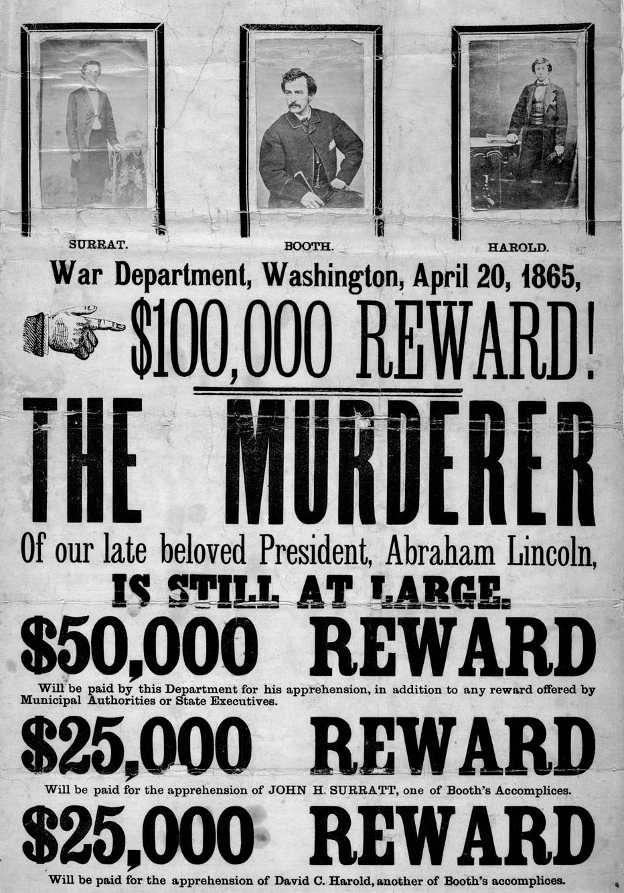
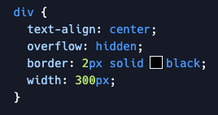
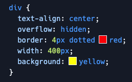
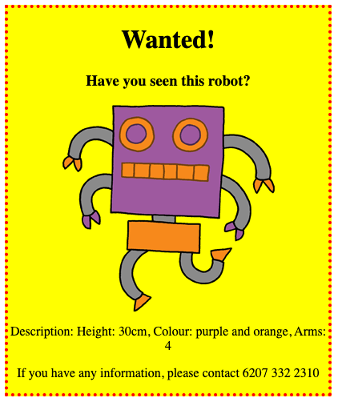
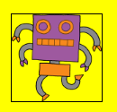
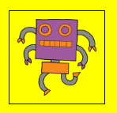
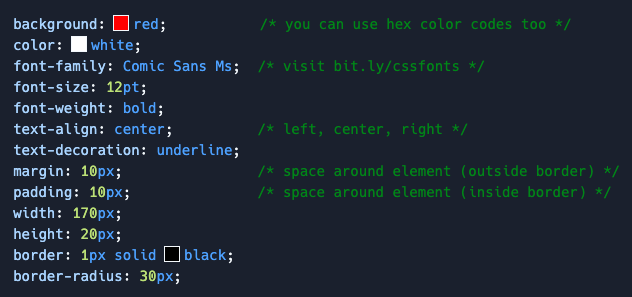

Make a Wanted Poster (CSS properties)
This project introduces more CSS properties (text decoration, borders, margins, padding) that you can use to customize the
a e s t h e t i c
of your website! We'll use these CSS properties to create a "Wanted!" poster, like this one below for John Wilkes Booth and his conspirators.
-
Visit bit.ly/MakeAWantedPoster to open a starter project. Click the "Fork" button to make your own copy.
Note: the web preview next to the code editor may not work correctly. But the website will appear correctly at: https://task-4-wantedposter--toniscullion1.repl.co (except, use your project name and your Replit username in the URL). -
Open the
style.cssfile. There are already some CSS properties set for the<div>containing the different parts of the poster. -
Start by altering the property:
text-align: center;
centertoleftorright. Be sure to preserve the semicolon at the end of the line. -
How about the
borderproperty? In the code,2pxmeans 2 pixels. What happens when you change2px solid blackto4px dotted red? Here are some different options that you can use for the border style:dashed dotted double groove inset outset ridge solid -
Change the
widthto400px. How do you like the look? Adjust the width until you're happy with the size. -
Let's add a new CSS property to set the poster's background color. Inside the div selector, add a new line: 
background: yellow;
You may need to visit the actual website https://task-4-wantedposter--toniscullion1.repl.co (but with your project name and Replit username), if the live preview appears to be broken. -
Add the following CSS property to your
divselector:border-radius: 40px;
-
Let's now customize the styling for just the image, separate from the rest of the poster. Add the following code underneath
divselector's CSS.img { width: 100px; border: 1px solid black; } -
The robot looks kind of cramped! We can fix this by adding some padding around the image. Add the following CSS property
padding: 10px;
imgtag's CSS selector. Also, try changing the padding to50pxto see what happens. -
The "Wanted!" heading could use some more energy! Let's add some style to the
<h1>tag. Add the following code:h1 { font-family: Impact; font-size: 50pt; }
-
There's a lot of space between the heading and the stuff around it. That space is called a margin. We can make the margin smaller using this CSS property:
margin: 10px;

-
You can also underline your heading:
text-decoration: underline;
underline overline wavy underline double underline dotted underline dashed underline underline overline -

Can you make your poster more awesome? You could . . .
- Add some style to the
<h3>or<p>tags, to further customize the poster. - Customize the text and image to make a "Wanted!" poster for a celebrity or friend, or perhaps re-create a historic poster.
- Instead of a "Wanted!" poster, you could make an advertisement for an event at Democracy Prep that you are involved in.
Below is a list of some CSS properties that you can use:
- Add some style to the
Credits: this lesson was adapted from both Toni Scullion's lesson plan and the corresponding Raspberry Pi Foundation project.